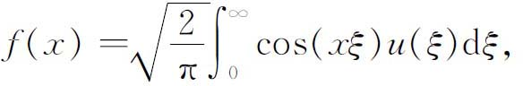
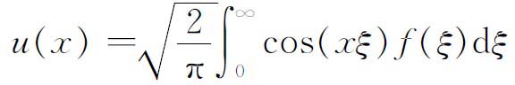
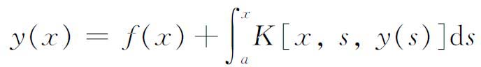
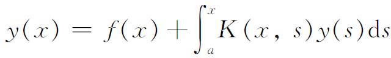
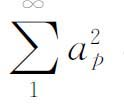
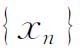
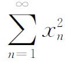
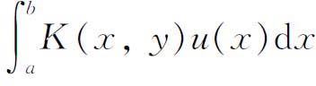
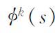
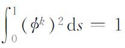

5．理论的推广
希尔伯特对积分方程的看重，使这门学科在相当长的一段时间内，成了一种世界性的狂热，产生了大量的文献，其中大多数都只有短暂的价值。然而，这门学科的某些推广却证明是有价值的。我们只能把它们列出来。
上面介绍的积分方程的理论，涉及的是线性积分方程；也就是说，对未知函数u（x）来说是线性的。这个理论已推广到非线性积分方程，在那里未知函数以二次、高次或更为复杂的形式出现。
此外，我们的简略叙述没有谈到，对于已知函数f（x）和K（x，y）要加上什么条件才导致许多结论。如果这些函数是不连续的并且间断性没有限制，或者区间［a，b］换成了一个无穷区间，那么许多结果就得改变或者起码需要新的证明。例如，即使是傅里叶变换

它可以看作第一类的积分方程，并且具有反变换

作为它的解，但是它只有两个特征值±1，而每一个特征值都有无穷多个特征函数。这些情况现在都是在奇异积分方程这个标题下进行研究的，这样的方程不能用解沃尔泰拉和弗雷德霍姆方程的方法求解。然而，它们却显示了奇妙的性质，这就是存在λ值的连续区间或带谱，对于它们解是存在的。在这个课题上发表第一篇有意义文章的是外尔（1885—1955）(22)。
积分方程存在定理这一课题也已经引起了很大的注意，这项工作专注于线性和非线性积分方程。例如，关于

的存在定理就有许多数学家给出过，这种方程包含了第二类沃尔泰拉方程

作为一种特殊情形。
历史上，下一个重大的进展乃是积分方程研究工作的一种自然产物。希尔伯特认为一个函数是由它的傅里叶系数给出。这些系数满足条件

有穷。他还引进了实数序列
，使得
有穷。后来，里斯和费希尔证明，在勒贝格平方可和函数与它们的傅里叶系数所成的平方可和序列之间，存在一个一一对应关系（见前）。平方可和序列可以看成无穷维空间中的点的坐标，这个无穷维空间是n维欧几里得空间的推广。这样，函数可以看成现在称之为希尔伯特空间的一个点，积分
可以看成是把u（x）变换成它自己或其他函数的一个算子。这些思想为积分方程的研究提出了一种抽象的研究方法，它适应了变分法的初期抽象的研究方法。这种新的研究方法，现在作为泛函分析已为人所知，我们将在下一章叙述它。参考书目
Bernkopf，M．：“The Development of Function Spaces with Particular Reference to their Origins in Integral Equation Theory，”Archive for History of Exact Sciences，3，1966，1-96．
Bliss，G．A．：“The Scientific Work of E．H．Moore，”Amer．Math．Soc．Bull．，40，1934，501-514．
Bocher，M．：An Introduction to the Study of Integral Equations，2nd ed．，Cambridge University Press，1913．
Bourbaki，N．：Eléments d'histoire des mathématiques，Hermann，1960，pp．230-245．
Davis，Harold T．：The Present State of Integral Equations，Indiana University Press，1926．
Hahn，H．：“Bericht über die Theorie der linearen Integralgleichungen，”Jahres．derDeut．Math．-Verein．，20，1911，69-117．
Hellinger，E．：Hilberts Arbeiten über Integralgleichungen und unendliche Gleichungssysteme，见希尔伯特的Gesam．Abh．，3，94-145，Julius Springer，1935。
Hellinger，E．：“Begründung der Theorie quadratischer Formen von unendlichvielen Veränderlichen，”Jour．für Math．，136，1909，210-271．
Hellinger，E．，and O．Toeplitz：“Integralgleichungen und Gleichungen mit unendlichvielen Un-bekannten，”Encyk．der Math．Wiss．，B．G．Teubner，1923-1927，Vol．2，Part 3，2nd half，1335-1597．
Hilbert，D．：Grundzüge einer allgemeinen Theorie der linearen Integralgleichungen，1912，Chelsea（reprint），1953．
Reid，Constance：Hilbert，Springer-Verlag，1970．
Volterra，Vito：Operem atematiche，5 vols．，Accademia Nazionale dei Lincei，1954-1962．
Weyl，Hermann：Gesammelte Abhandlungen，4 vols，Springer-Verlag，1968．
————————————————————
(1) Jour．für Math．，103，1888，228．
(2) Mém de l'Acad．des Sci．，Paris，1782，1-88，pub．1785，和1783，423-467，pub．1786＝Œuvres，10，209-291，特别是p．236。
(3) Jour．de l'Ecole Poly．，12，1823，1-144，249-403．
(4) Magazin for Naturuidenskaberne，1，1823＝Œuvres，1，11-27．
(5) Jour．für Math．，1，1826，153-157＝Œuvres，1，97-101．
(6) Jour．de l'Ecole Poly．，13，1832，1-69．
(7) Jour．de Math．，2，1837，16-35．
(8) Rendiconti del Circolo Matematico di Palermo，8，1894，57-155＝Œuvres，9，123-196．
(9) Acta Math．，20，1896-1897，59-142＝Œuvres，9，202-272．也可以看参考书目中黑林格（E．Hellinger）和特普利茨（O．Toeplitz）的引文。
(10) Atti della Accad．dei Lincei，Rendiconti，（5），5，1896，177-185，289-300；AttiAccad．Torino，31，1896，311-323，400-408，557-567，693-708；AnnalidiMat．，（2），25，1897，139-178；所有这些都包含在他的Opera matematiche，2，216-313。
(11) Acta Math．，27，1903，365-390．
(12) 一个很好的解释可以在柯瓦列夫斯基（Gerhard Kowalewski）的Integralgleichungen，Walter de Gruyter，1930，101-134中找到。
(13) 标准化是指调整

，使得
。(14) Math．Ann．，48，1897，365-389．
(15) Rendiconti del Circolo Matematico di Palermo，22，1906，241-259．
(16) Math．Ann．，72，1912，562-577＝Grundzüge，Chap．22．
(17) Math．Ann．，63，1907，433-476和64，1907，161-174．
(18) Comp．Rend．，144，1907，615-619，734-736，1409-1411．
(19) Comp．Rend．，144，1907，1022-1024．
(20) Comp．Rend．，144，1907，1148-1150．
(21) Math．Ann．，69，1910，449-497．
(22) Math．Ann．，66，1908，273-324＝Ges．Abh．，1，1-86．